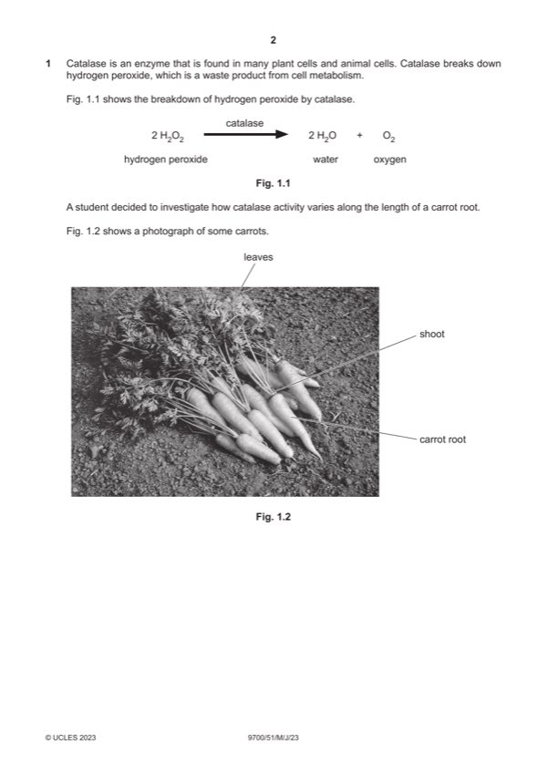

Question 1

Original paper page 2
Part 1(a) — solution
any one from: 1
volume of (pH7) buffer ;
speed of centrifuge ;
time in centrifuge ;
Mark points
- Include the ideas shown in the solution above.
Part 1(b) — solution
idea that time for disc rising decreases as catalase activity increases ; ora 1
Mark points
- Include the ideas shown in the solution above.
Part 1(c)(i) — solution
distance from base of shoot ; 1
Mark points
- Include the ideas shown in the solution above.
Part 1(c)(ii) — solution
any six from: 6
Mark points
- Include the ideas shown in the solution above.
Part 1 — solution
method to cut, tissue from carrot (root) ;
Mark points
- Include the ideas shown in the solution above.
Part 1(d)(i) — solution
volume of gas collected (after 1 minute) ; 1
2023 Page 8 of 12
9700/51 Cambridge International AS & A Level – Mark Scheme May/June 2023
Mark points
- Include the ideas shown in the solution above.
Part 1(d)(ii) — solution
distilled water / deionised water / water, in table heading ; 2
correct volumes of stock solution and water (in Table 1.1) ;
Mark points
- Include the ideas shown in the solution above.
Part 1(d)(iii) — solution
supports conclusions: 3
Mark points
- Include the ideas shown in the solution above.
Part 1 — solution
paired data quotes / manipulated data (from Fig. 1.7), to show increase in hydrogen peroxide concentration increases
the volume of gas collected ;
doesn’t support – max 2 marks:
Mark points
- Include the ideas shown in the solution above.
Part 1 — solution
no difference between year 1 and year 2 of production cycle in 2004–2005 ;
Mark points
- Include the ideas shown in the solution above.
Part 1 — solution
95%, probability / confidence that / chance that, the, true / actual / population / parametric, mean lies within, this
range / these limits
or
Mark points
- Include the ideas shown in the solution above.